{% extends 'base.html' %}
{% block title %}Combo{% endblock %}
{% block content %}
Combo
On the Offense
Here are the important mechanics to know when theorycrafting combos and applying them.
The Limit Mechanics.
Most moves inflict a certain amount of limit to your opponent.
There are 4 types of limit: Spirit, Matter, Void and Non-typed.
Moves of a type inflict limit depending on their type (Neutral and Non-typed both inflict Non-typed limit).
When any of the 4 limits hits 100% or more, the opponent won't be able to be hit any more, but he will also be unable to air-tech. Then, depending on which limits reach 100%, one or more of the following effects will happen:
- Spirit: your opponent can't use his meter in any way for a short while after teching.
- Matter: forces a hard knockdown, which means that they are forced into a slower neutral tech.
- Void: while your opponent is knocked down or teching, he his attracted by you.
- Non-typed: will cancel whatever action you were in the instant you limited your opponent and will make you fall faster, essentially giving you more to oki.
If one manages to reach 100% or more in multiple limit types at the exact same tyme, each effect will apply.
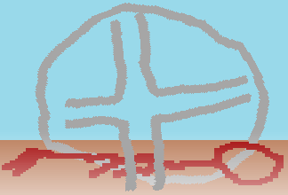 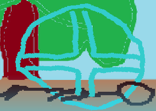 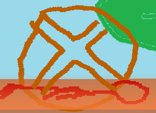 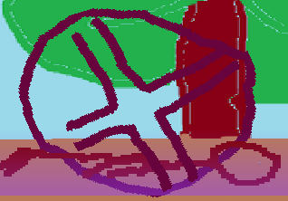
Proration
Every single move in the game has a different proration value and when someone is hit by a move, the proration of that move is applied and will reduce the damage of all consecutive moves in a combo.
Proration is a percentage and works like this: if a move has 95% of proration then every single move after that move in a combo will deal 5% less damage.
This proration stacks multiplicatively, so if one use a move with 95% and then combo into another with 95%, all other move in the combo, if they have 100% proration, will deal 9.75 less damge (because 95%x95% = 90.25%).
To simplify the more you hit someone in a combo, the less damage your moves will do and the more proration a move has (so the closer to 0% its proration is) the less suited this move is to use in combo generally, especially at the beginning of one.
Specials and Supers Proration
Even if specials and supers have proration like all other move they also have another kind of special proration for each one on top of the normal one.
When you do more than two specials during a combo, there will be a special proration that will be stacked on top of the normal proration of the move, it will be fairly small at first, but grows exponentially each time a special is used in the same combo.
The super proration work exactly the same way than specials proration. After the 2nd super and on a special proration will be added and will grow more and more as you use supers, only difference is that it scales harder than specials proration.
The two are separate from each other, which mean that you can do two specials, and two supers before any proration being added on top of the normal proration of those moves.
Loop Protection
There is a very simple loop protection in the game, the more you do the exact same move in a combo, the more this move will have proration and limit.
Restand
Some moves in the game can restand. A move that restands won't knock down your opponent even if he falls to the ground in hitstun (which would normally cause a knockdown).
That means that you can stop your combo and sacrifice some damge to come back to pressure which might catch your opponent unprepared or be what you need to finish their guard bar down.
Offensive Overdrive
The offensive overdrive can be used during any move by pressing Ascend + N and will consume all your overdrive gage and cancel whatever move you were doing.
It can be used to strengthen your pressure or make a move safe but can also be used in combo not only to give youa access to better ones, but it also have a special interaction with a Non-typed defensive overdrive as, if you do your offensive overdrive as they do their Non-typed defensive overdrive you will beat their defensive overdrive.
It is a fairly rare occurence and there are better ways to beat a Non-typed defensive overdive if you see it coming, but it can be relevant.
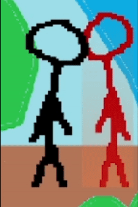
Getting Comboed
There are things you should be aware and can do during a combo even if few.
Restand Protection
When you're getting restanded you are not left without any chance to strike back as you will get a temporary amount of guard bar added.
This temporary guard bar remain as long as it's not destroyed by your opponent or as long as you don't parry or do a move and as long as you have some of this temporary bar, your guard bar natural regenration won't be cancelled when blocking a move.
It will give a bit of leeway for the defender and give them at least a small amount of time to get out of this situation, even if they didn't have that much guard bar remaining.
Platforms
Yes, platforms can be used on the defender side, as you can press down to decide to go through platforms even while being comboed.
It means that, when you're getting comboed, you can choose to land on a platform to end their combo sooner, however, you're exposing yourself to a very dangerous okizeme due to the falling tech state.
Defensive Overdrive
You can use defensive overdrive by pressing A + N or S or M or V when getting combo'd (more precisely, when you're hit by any move).
If used, the character will do a big shockwave that knocks back your opponent and end their combo.
However it isn't as simple as pressing any button as the defensive overdrive is typed too.
The type of your burst depend on your input.
The Non-typed version of the defensive overdrive will win against most moves of any type, however, it pushes less far and your overdrive will recover much slower after using it.
All the typed burst only win against the type they are strong against and not even against moves of their own type, however they push the opponent further and your overdrive won't suffer from any recovery penalty.
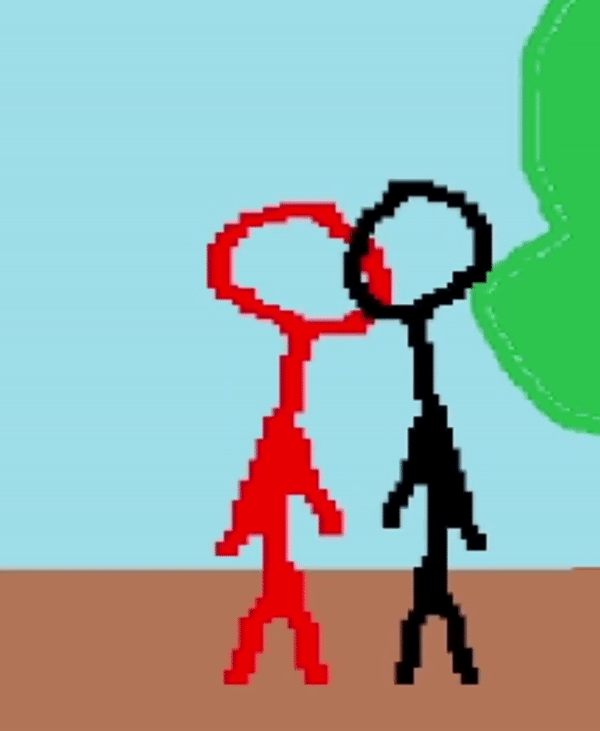
Airtech
When your untech counter runs out and you haven't been limited, you can perform an airtech by pressing any button and a direction.
There is a forward, backward, downward and upward airtech.
When you airtech, you are invincible for a short amount of time but you are vulnerabnle at the end of all airtechs and before you become actionnable again, so be careful.
The downward airtech works a bit differently since it will go downward until you hit the ground and the character will be invincible all the way.
However, once you'll hit the ground you will have a lot of vulnerable recovery time.
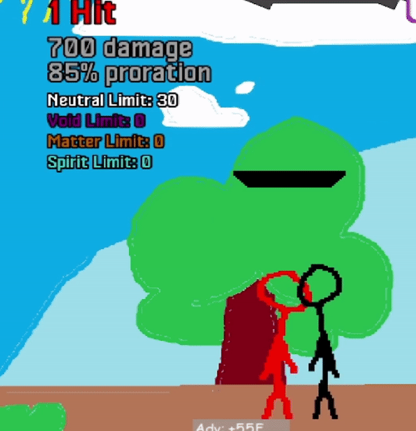 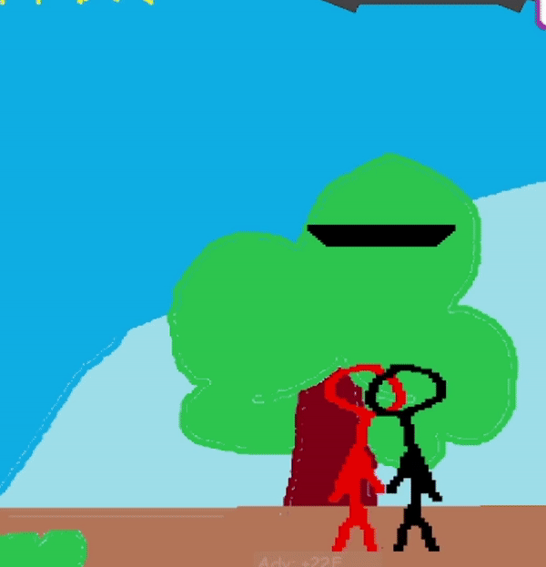 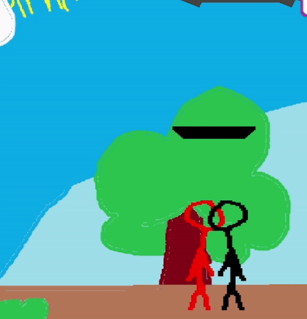 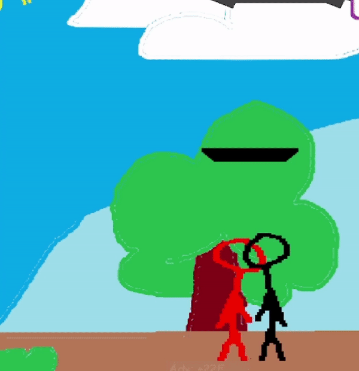
Ground Tech
Once you are knocked down and if you haven't being Matter limited or hard knocked down, you can perform 3 different grounded tech.
You can tech forward or backward. When you're teching in a direction, you have no collision box which means you can go through your opponent.
They are useful to get away from your opponent, but at the end of a directional tech there is a short instant where you can only block, meaning that, if you opponent knows the timing, mashing or using a reversal won't be an option.
The neutral tech will make you wake up without moving and you will keep your collision box, this might seems like a detriment but you can act as soon as you wake up so you will be able to mash or use reversal effectively.
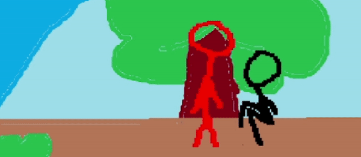 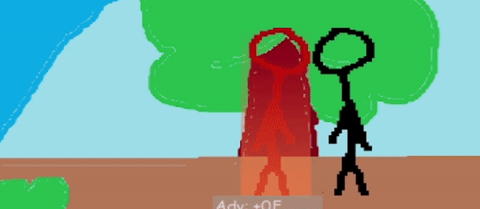 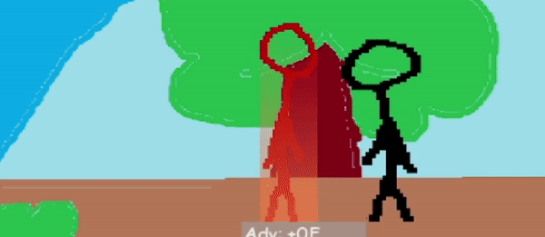
{% endblock %}